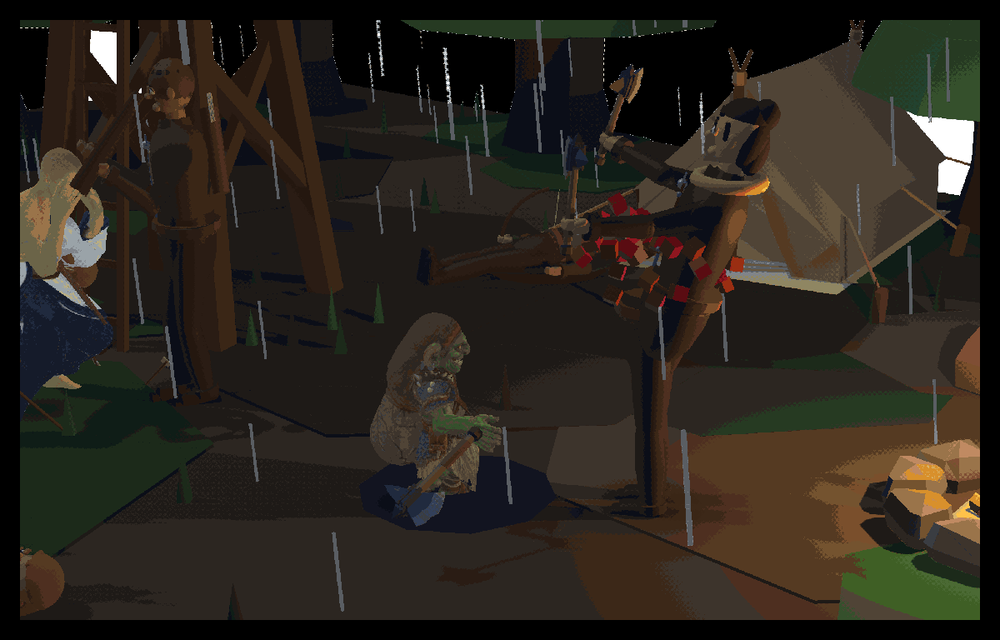

Programa 1 película · 1 min en total
-

01Sesión 17Película de 1:12
El campamento de Kressle
Llueve sobre el campamento de los bandidos. Sim Sim atrae todas las flechas, Gael tira al arquero de la torre con un chorro de agua y Tark parte en dos a la única que sabía dónde está el fuerte del Señor de las Astas.
Abrir la escena: El campamento de Kressle Ver en YouTube: El campamento de Kressle Ver el vídeo de El campamento de Kressle MP4 · 33 MB